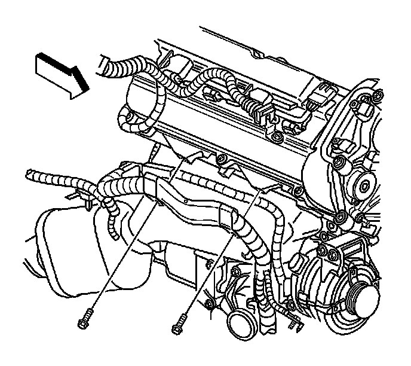
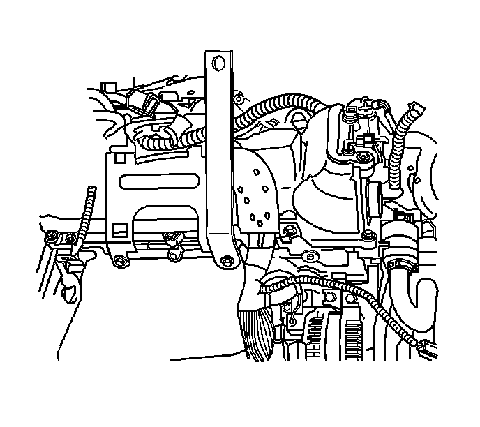
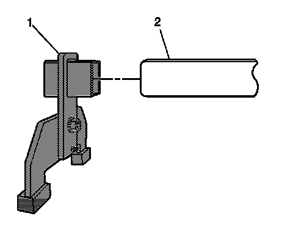
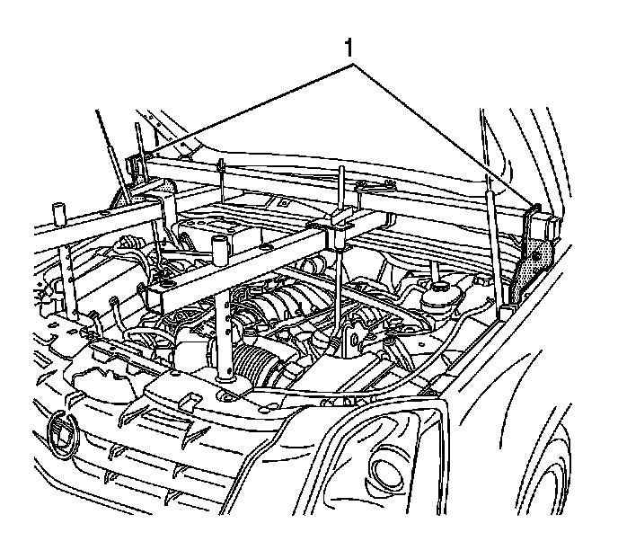
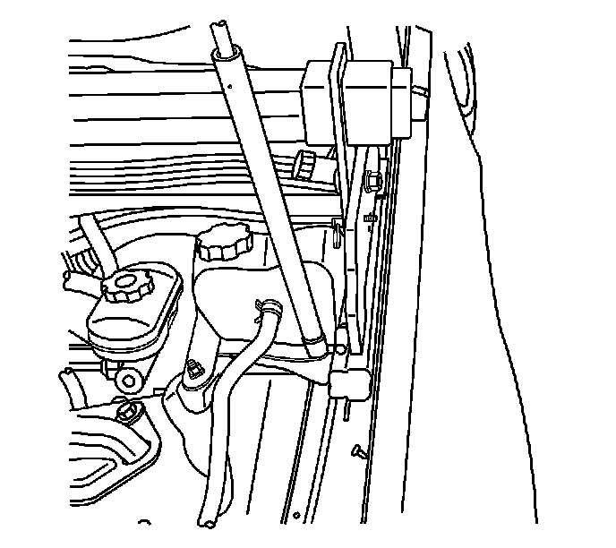
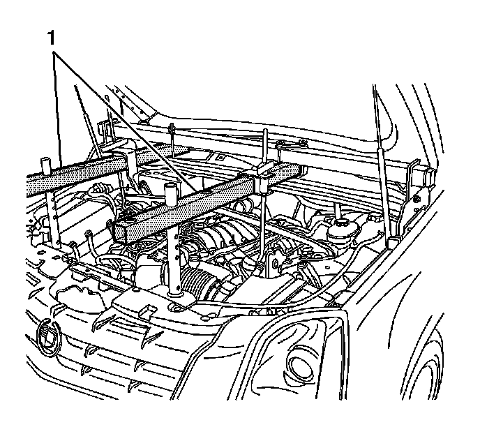
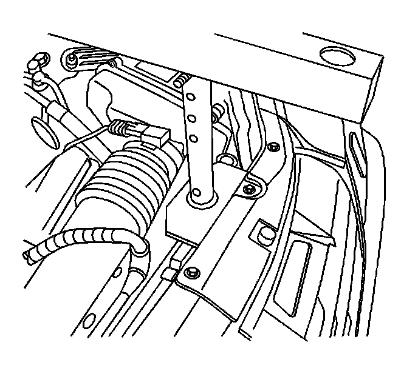
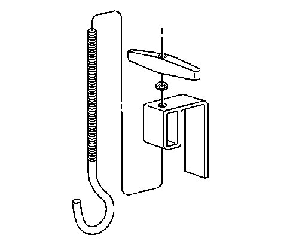
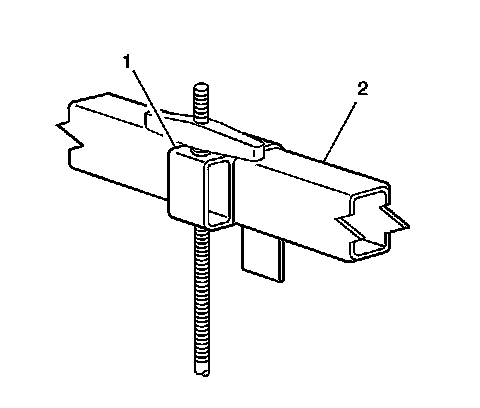
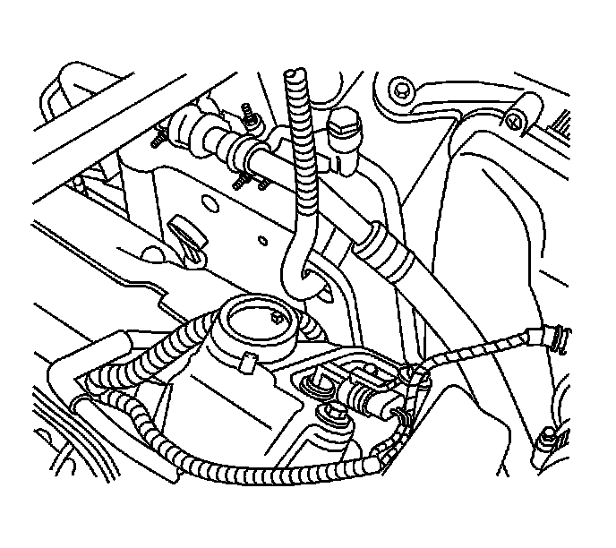

Engine Support Fixture
Engine Support Fixture
Tools Required
* J 28467-15 Engine Support Adapter
* J 28467-86 Engine Lift Bracket
* J 28467-87 Engine Lift Bracket
* J 28467-B Universal Engine Support Fixture
Installation Procedure
Important: The following procedure is for supporting the engine in vehicle. The J 28467-15 is for supporting the engine in vehicle only. It is not intended to be used for lifting the engine once the engine is removed. The J 28467-86 that bolts to the left front cylinder head is used for engine support in vehicle and engine lifting once the engine is removed. The J 28467-87 is only used to lift the engine once the engine is removed from the vehicle. The J 28467-87 can not be used for engine support in vehicle due to limited access to the rear of the right cylinder head in the area where the bracket mounts.
1. Instructions for the right rear J 28467-87 are included at the end of this procedure.

2. Remove the fuel injector sight shield. Refer to Fuel Injector Sight Shield Replacement (Service and Repair) .
3. Remove the wiring harness push pin from the left front cylinder head bolt hole.
4. Install the J 28467-86 to the left cylinder head.

5. Remove the front bolt securing the wiring harness bracket to the right cylinder head.

6. Install the J 28467-15 to the right cylinder head. The graphic shows the engine removed for clarity.

7. Assemble a J 28467-501A (1) to each end of the J 28467-518 (2).

8. Position the main support beam and rail support assembly (1) on the fender flange.

9. Ensure that the rear portion of the rail support is resting on the reinforced section of the fender flange.

10. Assemble a J 28467-16 tube assembly (1) to each end of the J 28467-518, in line with the lift bracket and support bracket, using the J 28467-1 cross brackets.

11. Install the J 28467-4A front support assemblies to the J 28467-16 using the J 28467-9 quick release pins. Ensure that the J 28467-16 are as level as possible by selecting the appropriate hole for the quick release pins.

12. Install the J 28467-7A , as required, to lift the hook through the J 28467-6A lift hook bracket.
13. Install the 1/2 inch lift hook washer and the J 28467-34 lift hook wing nut onto the J 28467-7A lift hook.

14. Install the J 28467-6A (1) over the J 28467-16 (2).
15. Adjust the J 28467-6A bracket (1) in order to align the hook with the left J 28467-86 .
16. Repeat the previous step for the right J 28467-15 .

17. Install each J 28467-7A through each engine lift bracket and engine support adapter. Ensure that the hooks do not damage the surrounding components.
18. Hand-tighten the J 28467-34 securely to remove all slack from the engine support fixture assembly.
19. The engine is now supported in vehicle to perform repairs that require front frame removal.

20. The J 28467-87 is used to lift the engine once the engine is removed from the vehicle.
21. Remove the ground strap from the right rear cylinder head and bolt the J 28467-87 in position.
22. The J 28467-87 and the J 28467-86 can now be used to lift the engine.
Removal Procedure
1. Unscrew the lift hooks (1) and remove them from the lift bracket and the support brackets. Remove the lift hooks from the tube assemblies.
2. Remove the front tube and support assemblies from the main support beam.
3. Remove the main support beam assembly.
4. Remove the J 28467-15 from the right cylinder head.
Notice: Refer to Fastener Notice (Fastener Notice) .
5. Install the front wire harness bracket bolt.
Tighten the wire harness bracket bolt to 45 N.m (33 lb ft).
6. Remove the J 28467-86 from the left cylinder head.
7. Install the push pin securing the wiring harness to the left cylinder head.
8. Install the fuel injector sight shield. Refer to Fuel Injector Sight Shield Replacement (Service and Repair) .